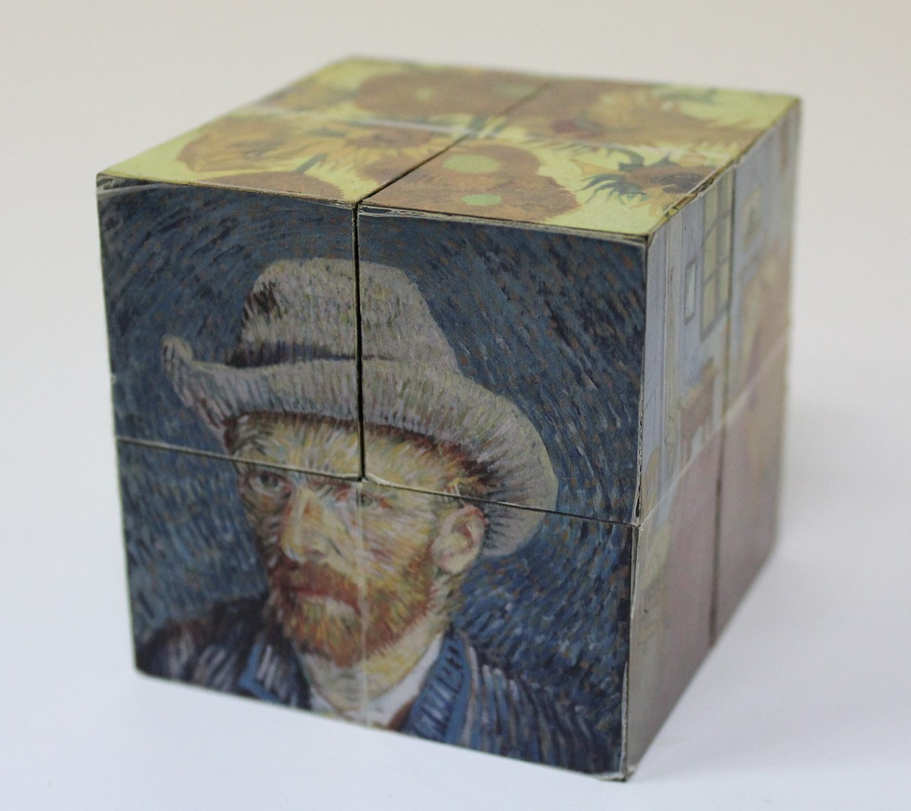
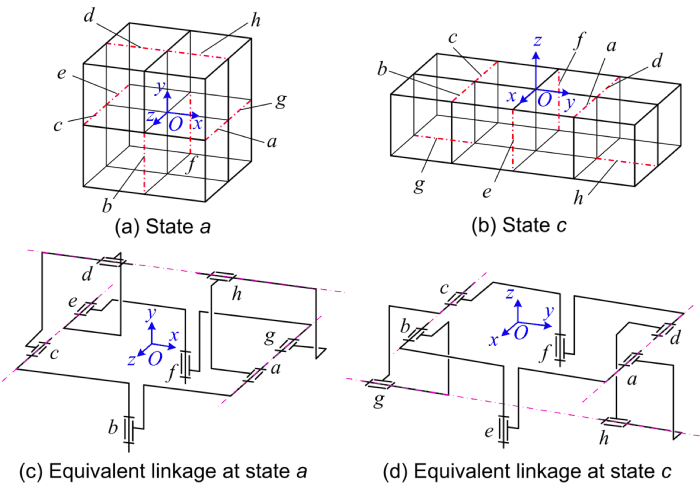
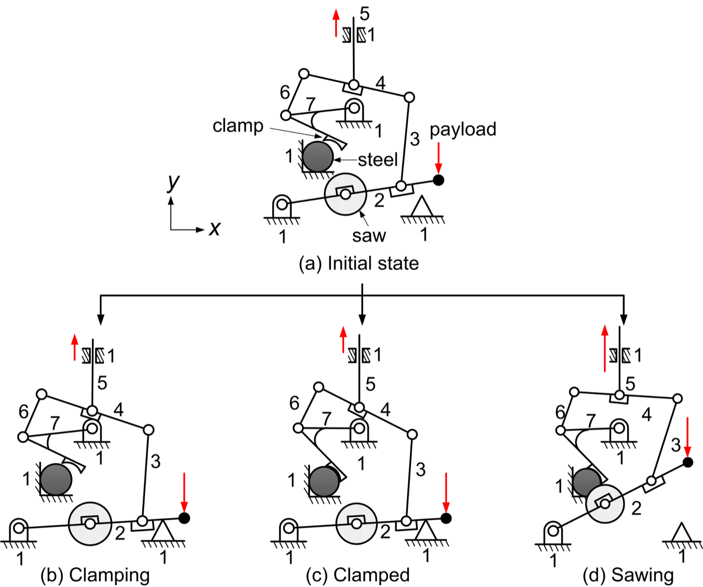
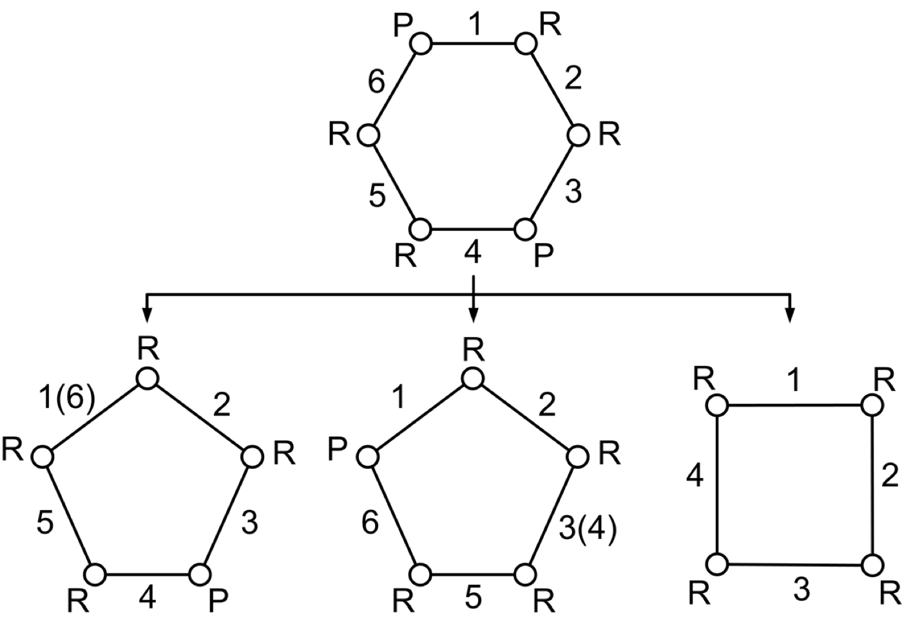

Research · Theme
Reconfigurable mechanisms
Some mechanisms change their own structure as they move: a joint locks, two links merge, a chain splits. Describing when and how that can happen, and designing it on purpose, is the subject of this theme, which goes back to my master's work with Hong-Sen Yan at National Cheng Kung University.
The early papers set out how to represent mechanisms with variable topologies and their configuration singularities; later ones analyse families of reconfigurable cube mechanisms and the structural decomposition of planar variable-topology mechanisms. The idea also meets the balancing theme in a reconfigurable mechanism balanced by a single passive element.




Animations
One animated page per representative paper, drawn in the style of the papers’ own figures.
A cube of eight cubes that folds into other shapes
Eight hinged sub-cubes fold from cube to slab to cube: an 8R loop whose mobility appears when two hinges line up.
Animation · 2014One mechanism, three topologies
The steel clamping and sawing mechanism closes a clamp, stiffens, then saws; its topology graph changes live.
Animation · 2007Counting freedoms when the topology keeps changing
A push-button lock through four stages, with the mobility that screw theory gets right and the planar formula gets wrong.
Representative papers
- Configuration analysis of a class of reconfigurable cube mechanisms: mobility and configuration isomorphism. animation
Kuo, C.-H. and Su, J.-W., Mechanism and Machine Theory, 2017. doi - Structure decomposition and homomorphism identification of planar variable topology mechanisms. animation
Kuo, C.-H. and Chang, L.-Y., ASME Journal of Mechanisms and Robotics, 2014. doi - On the mobility and configuration singularity of mechanisms with variable topologies. animation
Kuo, C.-H. and Yan, H.-S., ASME Journal of Mechanical Design, 2007. doi
Also under this theme
- An algebraic formulation for the configuration transformation of a class of reconfigurable cube mechanisms.
Kuo, C.-H., Su, J.-W. and Wu, L.-C., Mechanical Sciences, 2017. doi - Reconfiguration principles and strategies for reconfigurable mechanisms.
Kuo, C.-H., Dai, J. S. and Yan, H.-S., Journal of Science and Innovation, 2012. doi - Representations and identifications of structural and motion state characteristics of mechanisms with variable topologies.
Yan, H.-S. and Kuo, C.-H., Transactions of the Canadian Society for Mechanical Engineering, 2006. doi - Topological representations and characteristics of variable kinematic joints.
Yan, H.-S. and Kuo, C.-H., ASME Journal of Mechanical Design, 2006. doi - Book Structural Characteristics of Mechanisms with Variable Topologies: Taking into Account the Configuration Singularity.
Kuo, C.-H., VDM Verlag Dr. Müller, Saarbrücken, 2008. link
Figures on this page are the author's own drawings and photographs as published in the papers cited, reproduced here under the publishers' author reuse rights. Copyright remains with the respective publishers.